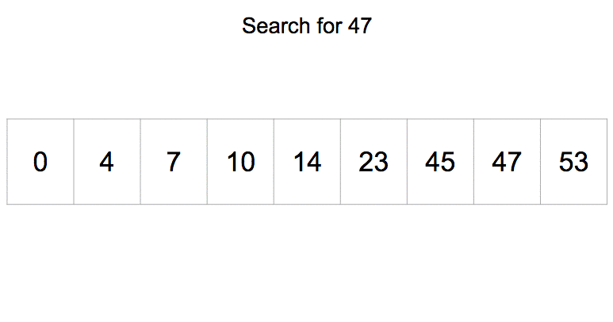
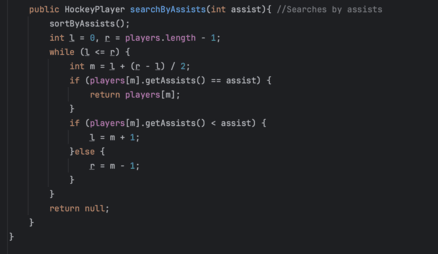

Bubble sort interates through a loop comparing 2 adjacent elements. If the one to the left is larger,
swap the 2 values and continue this until the end of the loop.
Binary search is a more complex and efficient searching algorithm. Binary search cuts the list in half and compares the value being searched to the midpoint.
If the midpoint is greater, the right half is discarded, while if the midpoint is smaller the left half is discarded. This process will continue until
the value is found. A downside however is that Binary search must already be sorted for it to function because it is unable to discard the right or left half
if the program cannot confirm if the midpoint is smaller or not.
Visual representation of how Binary Search works
